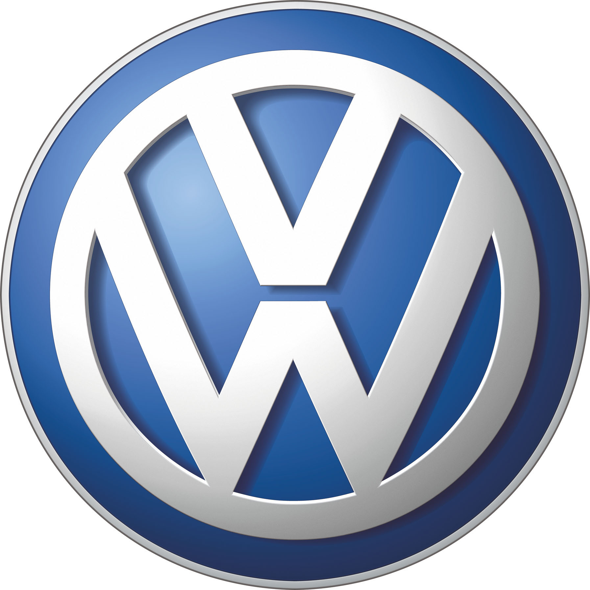
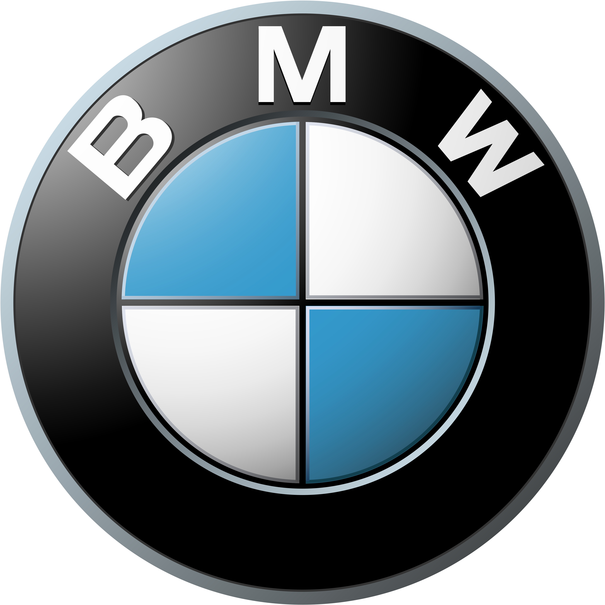
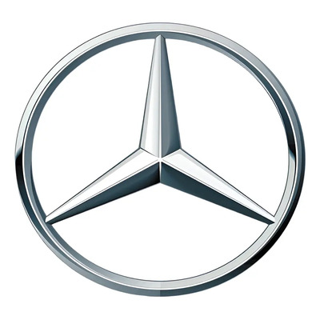
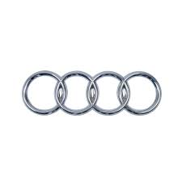
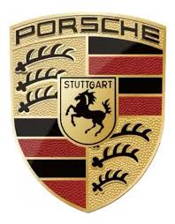
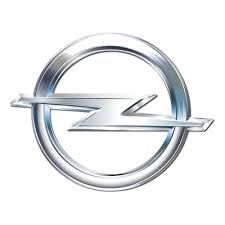

Tabela de carros alemães
| Código | Marca | Fundação | Sede | Modelo icônico |
|---|---|---|---|---|
| 001 | Volkswagen | 1937 | Wolfsburg, Alemanha | Fusca, Golf GTI |
| 002 | BMW | 1916 | Munique, Alemanha | M3, M5 |
| 003 | Mercedes-Benz | 1926 | Stuttgart, Alemanha | Classe C, AMG GT |
| 004 | Audi | 1909 | Ingolstadt, Alemanha | RS3, R8, A4 |
| 005 | Porsche | 1931 | Stuttgart, Alemanha | 911, Cayenne, Panamera |
| 006 | Opel | 1862 | Rüsselsheim, Alemanha | Corsa, Astra, Kadett |
Volkswagen

A Volkswagen, cujo nome significa "carro do povo" em alemão, foi fundada em 1937 pelo governo alemão. Seu primeiro modelo icônico foi o Fusca (Beetle), projetado por Ferdinand Porsche.
Hoje é uma das maiores montadoras do mundo, com marcas como Audi, Porsche e SEAT sob seu grupo. Sua sede fica em Wolfsburg, na Alemanha.
- Fundação: 1937
- Sede: Wolfsburg, Alemanha
- Modelo icônico: Fusca, Golf GTI
BMW

A BMW (Bayerische Motoren Werke, ou "Fábrica de Motores da Baviera") foi fundada em 1916, inicialmente como fabricante de motores de avião.
Reconhecida mundialmente pelo desempenho e luxo, a BMW é famosa por modelos como a série M, que combina tecnologia de ponta com esportividade.
- Fundação: 1916
- Sede: Munique, Alemanha
- Modelo icônico: M3, M5
Mercedes-Benz

A Mercedes-Benz tem suas raízes em 1886, quando Karl Benz patenteou o primeiro automóvel movido a gasolina do mundo. É considerada a inventora do automóvel.
Referência em luxo e tecnologia, a Mercedes é responsável por inovações como o freio ABS e o airbag. Seu símbolo, a estrela de três pontas, representa domínio em terra, mar e ar.
- Fundação: 1926
- Sede: Stuttgart, Alemanha
- Modelo icônico: Classe C, AMG GT
Audi

A Audi foi fundada em 1909 por August Horch. O nome "Audi" é a tradução latina do sobrenome Horch, que em alemão significa "ouvir". Seus quatro anéis representam a fusão de quatro empresas que formaram a Auto Union em 1932.
Conhecida pelo slogan "Vorsprung durch Technik" (Avanço pela Tecnologia), a Audi é referência em design sofisticado e inovação tecnológica, com modelos esportivos como o RS3 e o R8.
- Fundação: 1909
- Sede: Ingolstadt, Alemanha
- Modelo icônico: RS3, R8, A4
Porsche

A Porsche foi fundada em 1931 por Ferdinand Porsche, o mesmo engenheiro que projetou o Fusca da Volkswagen. A marca é sinônimo de esportividade e precisão na engenharia alemã.
Seu modelo mais icônico, o 911, é produzido desde 1963 e é um dos carros esportivos mais reconhecidos do mundo. Hoje a Porsche faz parte do Grupo Volkswagen.
- Fundação: 1931
- Sede: Stuttgart, Alemanha
- Modelo icônico: 911, Cayenne, Panamera
Opel

A Opel foi fundada em 1862 por Adam Opel, inicialmente como fabricante de máquinas de costura e bicicletas. Só em 1899 a empresa começou a produzir automóveis, tornando-se uma das pioneiras da indústria automotiva alemã.
Popular por oferecer carros acessíveis e confiáveis, a Opel foi por muitos anos propriedade da General Motors e atualmente pertence ao grupo Stellantis. É muito popular na Europa com modelos como o Corsa e o Astra.
- Fundação: 1862
- Sede: Rüsselsheim, Alemanha
- Modelo icônico: Corsa, Astra, Kadett